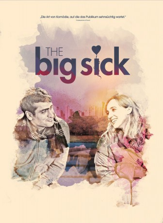

#7545 The Big Sick
Auszeichnungen: für 1 Oscars nominiert
 gesehen am 21.01.2019
gesehen am 21.01.2019
 
 IMDB-Wertung: 7.6 / 10
IMDB-Wertung: 7.6 / 10  Metascore: 86
Metascore: 86 
Kumail (Kumail Nanjiani) stammt aus einer Familie von pakistanischen Immigranten und schlägt sich mehr schlecht als recht als Comedian in Chicago durch. Seiner sehr konservativen und traditionsbewussten Familie ist Kumails Lebensstil schon seit längerem ein Dorn im Auge, doch auch wenn er alle potentiellen Ehefrauen-Kandidatinnen, die seine Eltern ihm regelmäßig vorsetzen, bisher abgelehnt hat, bringt er es doch nicht fertig, endgültig mit seiner Familie zu brechen. Auch als er eine Beziehung mit Emily (Zoe Kazan) beginnt, die er bei einem seiner Auftritte kennenlernt, ändert sich daran nichts und ihre junge Liebe droht zu zerbrechen, als sie irgendwann erfährt, dass er seinen Eltern noch nichts von ihr erzählt hat. Da wird Emily wegen einer mysteriösen Erkrankung ins Krankenhaus eingewiesen und in ein künstliches Koma versetzt. Nun muss Kumail sich entscheiden, ob er zu seiner großen Liebe steht…
Jahr: 2017
Dauer: 120 Minuten
FSK: 6
Land: USA Studio: LionsgateTonspuren: DTS - ,
Untertitel: Deutsch,
Auflösung: 1080p (1920x1036) Größe: 10444 MB
Genre: Drama, Komödie, Liebe
Regisseur: Michael Showalter
Drehbuch: Emily V. Gordon
Soundtrack:
Darsteller:
 Kumail Nanjiani als Kumail
Kumail Nanjiani als Kumail Zoe Kazan als Emily
Zoe Kazan als Emily Holly Hunter als Beth
Holly Hunter als Beth Ray Romano als Terry
Ray Romano als Terry Anupam Kher als Azmat
Anupam Kher als Azmat- Zenobia Shroff als Sharmeen
 Adeel Akhtar als Naveed
Adeel Akhtar als Naveed- Bo Burnham als CJ
- Aidy Bryant als Mary
- Kurt Braunohler als Chris
- Vella Lovell als Khadija
 Myra Lucretia Taylor als Nurse Judy
Myra Lucretia Taylor als Nurse Judy Jeremy Shamos als Bob Dalavan
Jeremy Shamos als Bob Dalavan David Alan Grier als Andy Dodd
David Alan Grier als Andy Dodd- Ed Herbstman als Sam Highsmith
- Shenaz Treasury als Fatima
 Rebecca Naomi Jones als Jesse
Rebecca Naomi Jones als Jesse- Kuhoo Verma als Zubeida
- Mitra Jouhari als Yazmin
- Celeste Arias als Denise
- Shana Solomon als Nurse Bette
- Jeff Blumenkrantz als Dr. Wright
 Linda Emond als Dr. Cunningham
Linda Emond als Dr. Cunningham- Holly Chou als Dr. Whelan
- Andrew Pang als Dr. Spellman
- Alison Cimmet als Dr. Platt
- Lawrence Ballard als Dr. Lewin
- Shunori Ramanathan als Sumera
- Spencer House als Racist Heckler
 Matty Cardarople als Fast Food Cashier
Matty Cardarople als Fast Food Cashier Myra Turley als Waiting Room Person 1
Myra Turley als Waiting Room Person 1- William Stephenson als Waiting Room Person 2
 Jack O'Connell als Waiting Room Person 5
Jack O'Connell als Waiting Room Person 5- Isabel Shill als Party Goer 1
- Lauren Patten als Party Goer 2
- Keilly McQuail als Party Goer 3
 Zach Cherry als Party Goer 4
Zach Cherry als Party Goer 4- Sophia Muller als Chrissy , uncredited
 Vincent Price als Dr. Anton Phibes , archive footage, uncredited
Vincent Price als Dr. Anton Phibes , archive footage, uncredited- Susham Bedi als Tina, Khadija's Mother
- Rahul Bedi als Farhan, Khadija's Father
- Marilyn Torres als Waiting Room Person 3
 Kerry Flanagan als Waiting Room Person 4
Kerry Flanagan als Waiting Room Person 4- Charles Gould als Waiting Room Person 6
- Jack Corrigan als Restaurant Boy , uncredited
Datei: X:\2017(A-F)\Big Sick, The (2017, FSK6, 1920x1036).mkv seit 20.11.2017
Festplatte: HD 2017(A-Z)-2018(A-F)
 Es gibt insgesamt 152 Filme in der Gruppe '2017(A-F)'
Es gibt insgesamt 152 Filme in der Gruppe '2017(A-F)'